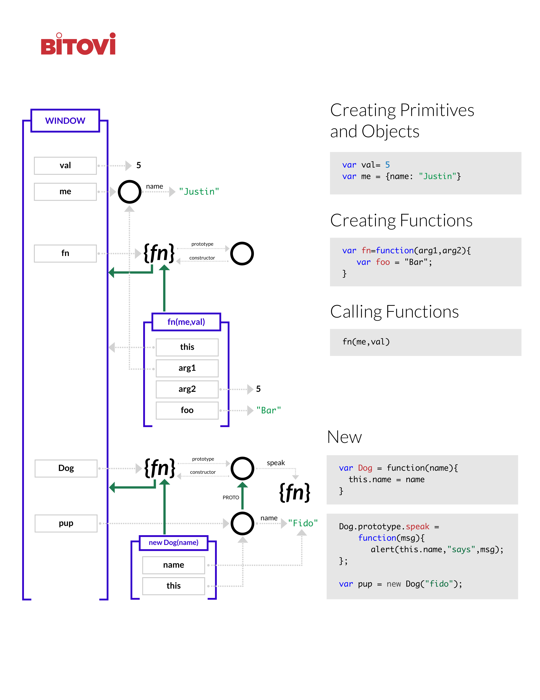

JavaScript page
This covers all the hard but important stuff you should know when learning JavaScript.
- Audience: Intermediate JS developers.
- Goal: Understand how JavaScript works, what's going on "under the hood".
Pre-requisites:
- Install NodeJS.
- Install http-server by running the following in your terminal
npm install http-server -g
Before starting:
- Create a
trainingfolder. - Download and unzip the js-exercises
folder into your
trainingfolder.
Overview
We are going to be figuring out how JavaScript works in memory.
